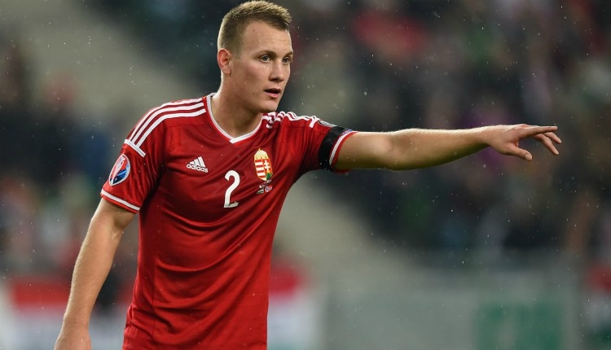

Magyar válogatott
Eredmények
Átigazolási hírek
Statisztikák

Statisztikák
Itt olvashatsz különböző statisztikákról csapatokkal kapcsolatban vagy éppen egy adott játékosról.
Átigazolási hírek
Itt olvashatsz különböző átigazolási híreket.